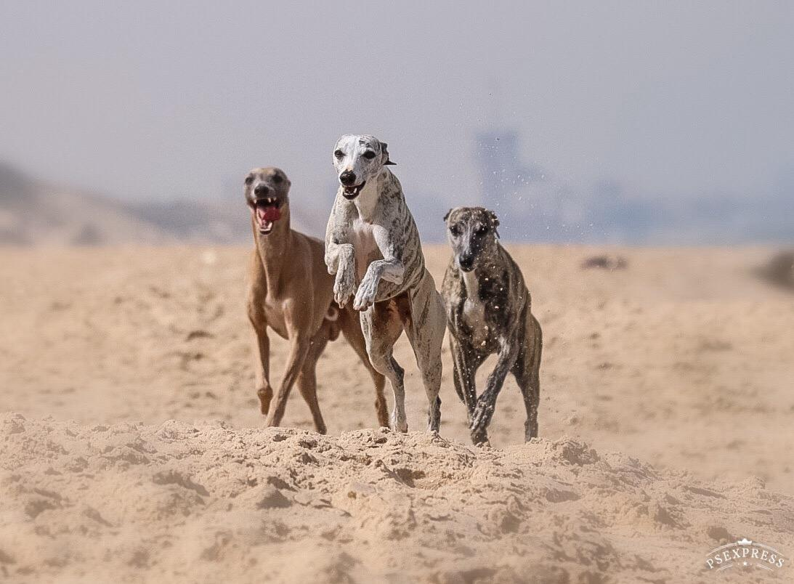
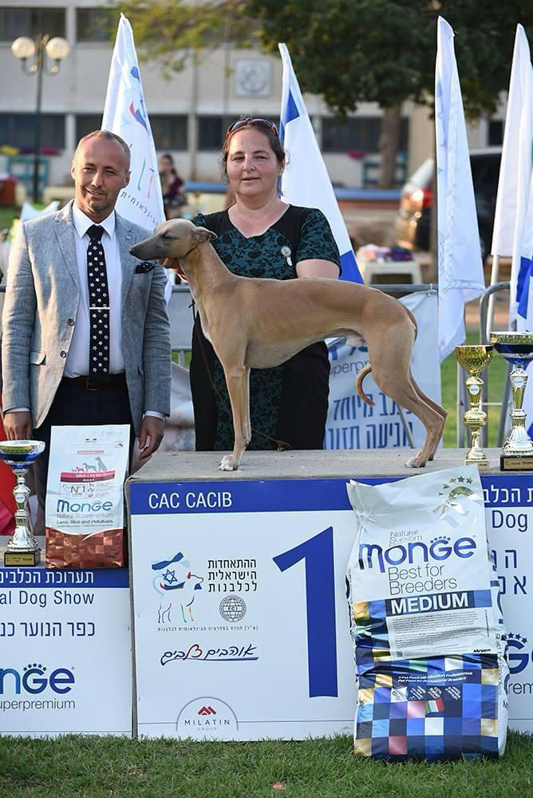
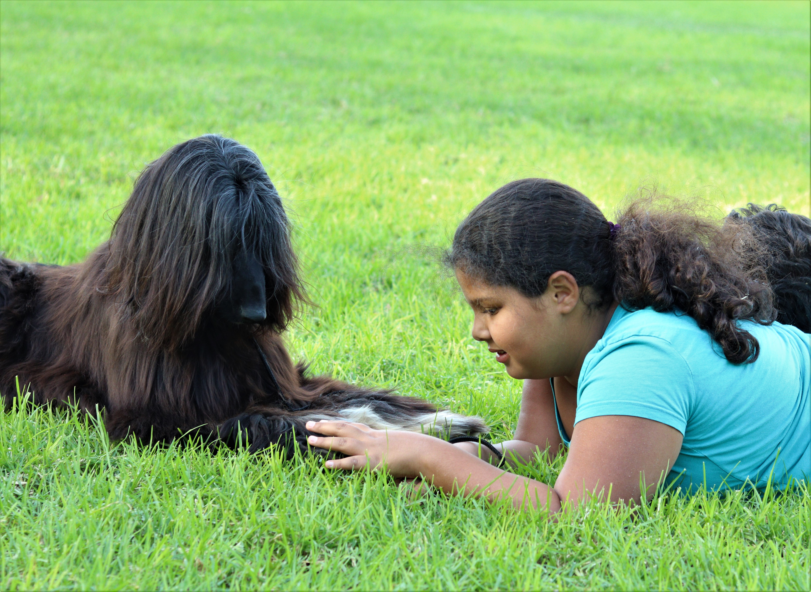
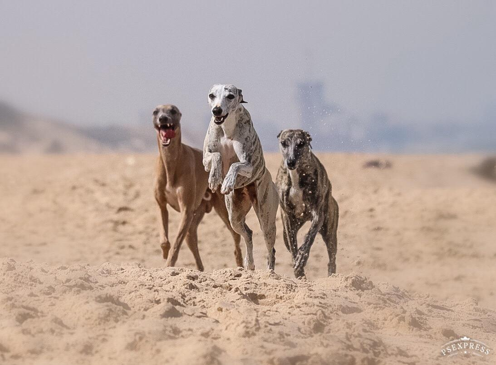
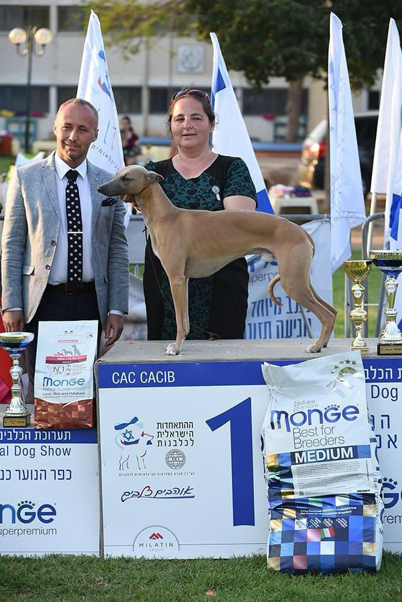
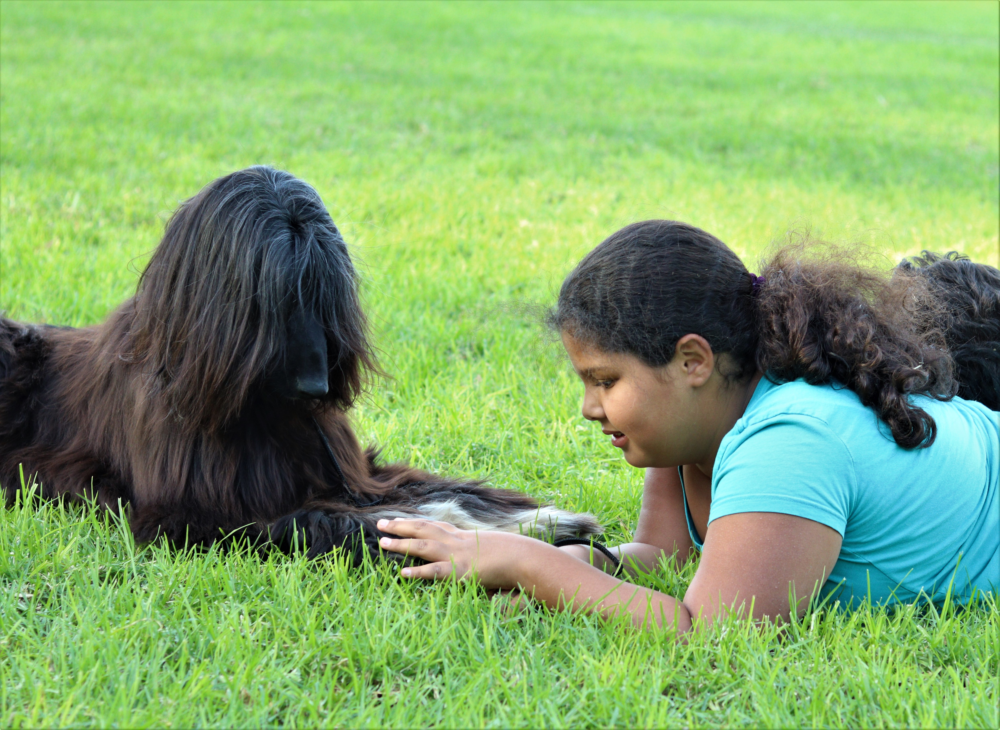

כרטיס ביקור
האהבה הראשונה הייתה האפגני אבל הוויפט שבה את ליבנו עם העדינות שלו והאהבה האין-סופית שהוא מחזיר.
בית הגידול 'סוויפט ראנדום' נוסד ב1996 עם המלטת הוויפט הראשונה שלנו, מהורים מגידול מקומי.
עם השנים בית הגידול התרחב מאוד עם כלבי יבוא נהדרים שהוסיפו למאגר הגנטי המקומי ושאת חותמם רואים עדיין בכלבים של היום.
אחרי הפסקה קצרה באמצע שנות ה2000, ולאחר הולדת ילדיי, בית הגידול חזר לפעילות עם כלבי יבוא מפולין, פינלנד, איטליה ואירלנד.
כל המשפחה שלנו מעורבת בגידול, אוהבים את הוויפטים אהבת אמת, הם חברינו במיטה ועל הספה.
כיום אנדראה מתמחה בשיפוט בגזע הוויפט, הילדים התחילו זה עכשיו להתעניין בתחרויות הנוהג הצעיר וכמובן שלא וויתרנו על האהבה הראשונה, ואנו חולקים את ביתנו עם אפגנית וגם צירפנו כלבת טרייר רוסי שחור – סיפור הצלחה בפני עצמו!
וויפט
גזע אנגלי שנוצר לפני כ-200 שנה מערבוב של גרייהאונדים עם טריירים שונים ליצירת כלב אמיץ ומהיר שיעזור לעניים בצייד ארנבות (כיוון שגרייהאונדים היו אסורים לגידול מלבד לבני האצולה). הכלבים גודלו בבית וקיבלו יחס מיוחד ואוהב במשפחות קורי הפחם העניים, מכיוון שהיו מפרנסים ומאכילים את המשפחה עם הצייד שהביאו.
כיום הוויפט הינו כלב אצילי, אלגנטי ובן לוויה מושלם, המתאים עצמו לכל סביבה: ספורטיבי עם משפחה פעילה (ריצות, אג'יליטי, פריזבי, מירוצי שדה ואף מרטון – יש לנו דוגמא בישראל ☺ ) או שקט עם משפחה שמעדיפה יום שקט על הספות (הוויפטים משמשים כלבי טראפיה וידועים באופי היציב והשקט).
כמובן שהם כלבי תערוכות מוצלחים ומצליחים במיוחד בזכות יופיים והאלגנטיות שלהם אשר תופסת את העין: השנה מנצחת התערוכה הגדולה בעולם – קראפט'ס באנגליה – הינה כלבת וויפט. וגם השנה מנצח התערוכה הבינלאומית בכנות שהתקיימה לא מכבר הוא כלב צעיר בבעלותינו.
הטיפול אינו מסובך כלל כשמדובר בוייפט: הם בעלי פרווה קצרה עם נשירה מועטה, גודל בינוני ולא אכלן גדול, בריא לרוב ונקי מטבעו, עד כדי כך שלא ממש אוהב בוץ או שלוליות.
אתם רוצים לצרף וויפט למשפחה? יש לכם שאלות? רוצים לדעת יותר?
אתם מוזמנים ליצור קשר בשמחה:
טל: 0508783505
מייל: swift.random@gmail.com
First Love
Our first love was the Afghan Hound, but the Whippet stole our hearts with its gentleness and endless love.
The Swift Random kennel was founded in 1996 with our first Whippet litter from local breeding stock.
Over the years, the kennel expanded greatly with wonderful imported dogs that added to the local gene pool and whose influence is still seen in today’s dogs.
After a short break in the mid-2000s and after the birth of our children, the kennel resumed activity with imported dogs from Poland, Finland, Italy, and Ireland.
Our whole family is involved in the breeding, we truly love the Whippets — they are our companions in bed and on the sofa.
Today Andrea specializes in judging the Whippet breed, the kids have just started to take interest in junior handling competitions, and of course we haven’t given up on our first love, and share our home with an Afghan Hound and also a Black Russian Terrier — a success story on its own!
Whippet
An English breed created about 200 years ago by mixing Greyhounds with various terriers to create a brave and fast dog to help the poor hunt rabbits (as Greyhounds were restricted to nobility only). The dogs were raised in homes and received special loving attention in the homes of poor coal miners, as they helped feed the family through their hunting.
Today the Whippet is a noble, elegant, and perfect companion dog that adapts to any environment: sporty with an active family (running, agility, frisbee, coursing, and even marathon — we have an example in Israel ☺), or calm with a family that prefers quiet days on the couch (Whippets serve as therapy dogs and are known for their stable and calm nature).
Of course, they are also very successful show dogs, especially due to their beauty and elegance which captures the eye: this year the winner of the largest dog show in the world — Crufts in England — was a Whippet. And this year, the winner of the international show in Kinneret, held recently, is a young dog owned by us.
Care is very easy when it comes to a Whippet: they have short hair with minimal shedding, are medium-sized, not heavy eaters, generally healthy and naturally clean — so much so that many dislike mud or puddles.
Would you like to add a Whippet to your family? Have questions? Want to know more?
Feel free to contact us:
Phone: 0508783505
Email: swift.random@gmail.com